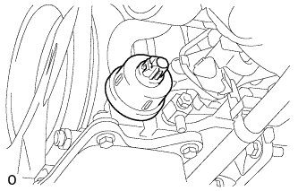

OIL PRESSURE SENSOR > INSTALLATION |
| 1. INSTALL OIL PRESSURE SENDER GAUGE ASSEMBLY |
Remove the adhesive from the threads of the oil pressure sender gauge and the bolt hole of the oil filter bracket.
 |
Apply adhesive to 2 or 3 threads of the oil pressure sender gauge.
 |
Install the oil pressure sender gauge.
Connect the oil pressure sender gauge connector.
| 2. ADD ENGINE OIL |
Add fresh oil.
| Oil Grade | Oil Viscosity (SAE) |
| G-DLD-1, API CF-4, API CF or ACEA B1 (You may also use API CE or CD) | - 5W-30 - 10W-30 - 15W-40 - 20W-50 (5W-30 is best choice for fuel economy and good starting in cold weather). |
| Item | Specified Condition |
| Drain and refill with oil filter change | 9.0 liters (9.5 US qts, 8.0 Imp. qts) |
| Drain and refill without oil filter change | 8.0 liters (8.5 US qts, 7.0 Imp. qts) |
| Dry fill | 9.7 liters (10.3 US qts, 8.5 Imp. qts) |
Install the oil filler cap.
| 3. INSPECT FOR ENGINE OIL LEAK |
Warm up the engine and check for an engine oil leak.
| 4. CHECK ENGINE OIL LEVEL |
Warm up the engine, stop the engine and wait 5 minutes. The engine oil level should be between the dipstick low level mark and full level mark.
If low, check for leakage and add oil up to the full level mark.
| 5. INSTALL NO. 1 ENGINE UNDER COVER SUB-ASSEMBLY |
 |
Install the engine under cover with the 10 bolts.
| 6. INSTALL FRONT FENDER SPLASH SHIELD SUB-ASSEMBLY RH |
 |
Install the splash shield with the clip, and then install the 3 bolts and screw.
| 7. INSTALL FRONT FENDER SPLASH SHIELD SUB-ASSEMBLY LH |
Install the splash shield with the clip, and then install the 3 bolts and screw.